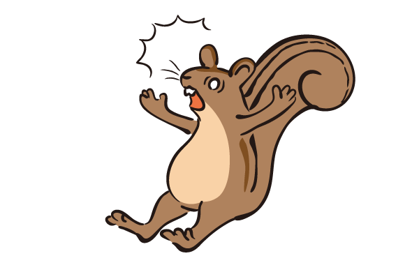

(規則請往上拉開即可閱讀)
(配置參考與全卡片請點此)
起始設置
松果分成一般松果 跟保存松果
跟保存松果 ，保存松果(勝利目標)要透過行動用基本松果換取。
，保存松果(勝利目標)要透過行動用基本松果換取。
一開始玩家會獲得2顆基本松果，並選擇一個位置放置基本卡片(產生2基本松果)。
規則
1.每回合開始時，先擲骰進行行動，再進行購買。
2.行動階段：根據擲出的骰子進行對應格子的行動。擲骰格為空，則視為獲得2個松果，產生保存松果行動選擇不產生也是獲得2個松果。
3.購買階段：購買的價格為該張牌左上數字加上所在格子編號的價格，無法或不想購買時可選擇跳過(最右牌背)。
4.放置階段(無購買則跳過此階段)：購買後得牌可以自己選擇要放到哪個位置，未放滿前不可重複，放滿後可覆蓋。
5.市場整理：回合結束後沒有購買的話最左邊一張會被棄掉，補上新的牌，有空格的位置也會向左邊靠攏。回合數+1，進行下一個行動階段。
遊戲結束
再盡快的時間內蒐集到7個保存松果就代表成功過冬，否則當無法把場上補滿的時候就是失敗了 。
。
素材來源